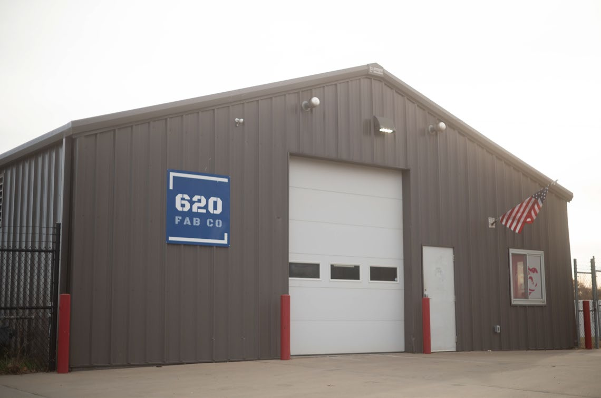
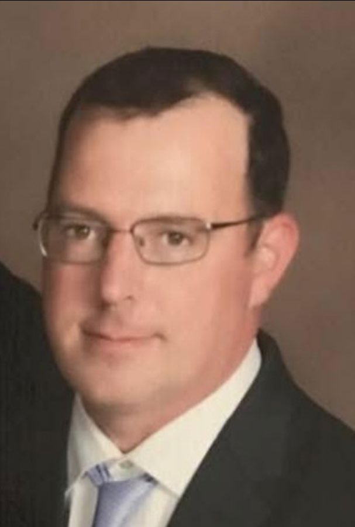
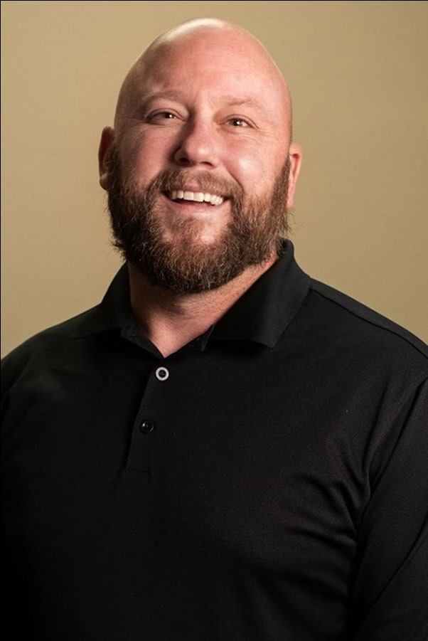
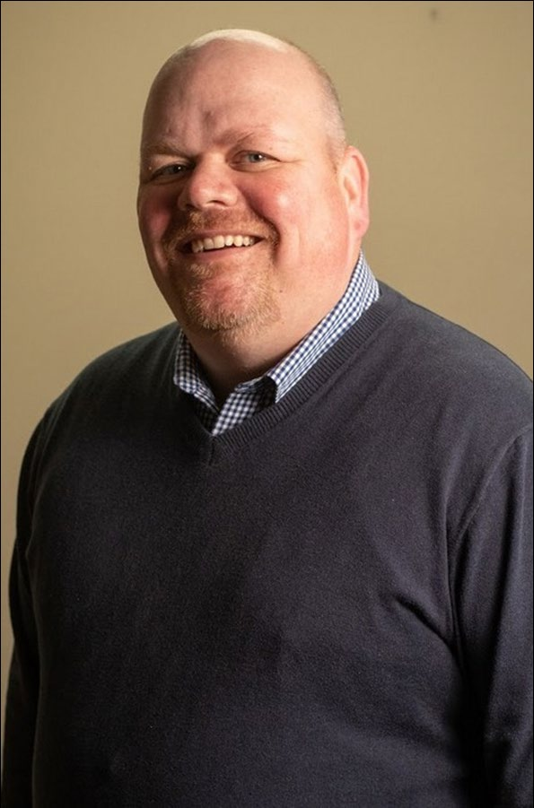

Transforming shipping containers into high-quality, customizable structures with innovative design and expert craftsmanship.

At 620 Fabrication, we pride ourselves on delivering more than just container-based structures; we deliver peace of mind. Our leadership team brings decades of experience across engineering, fabrication, project management and scalable development.
That foundation of experience, combined with dependability, supports a product built to last, designed to perform and delivered on time.
Founders and operators leading 620 Fabrication from Pittsburg, Kansas.

Founder · Lead Investor

Founder · Lead Engineer

Founder · Director of Finance and Operations
305 S. Joplin Street, Pittsburg, Kansas.